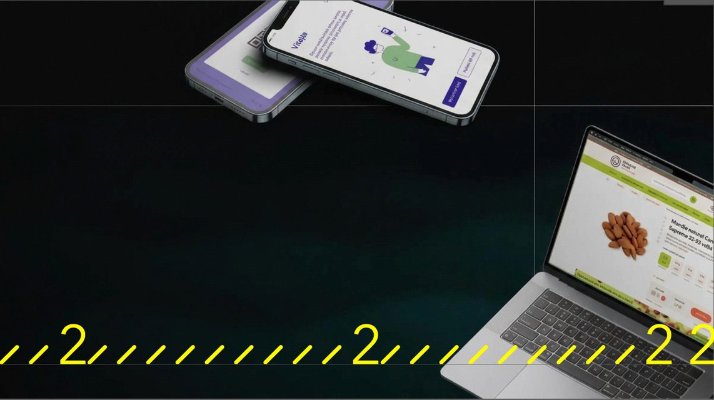

Argo22 Brand 2.0 · první idea01 / 13
Dvakrát měř.22
Jednou řeš.
Kateřina Fikarová · Matěj PlaňanskýŘíjen 2026
Myšlenka02 / 13
Dvakrát měř, jednou řežš.
Měř
= důkaz. Čísla, fakta.
Řeš
= celý produkt od A do Z.
22
= dvakrát dva. Číslo z loga.
Ze zadání 03 Archetyp: Tvůrce 70 % (řeš) · Mudrc 30 % (měř)Jedno písmeno: od dílny k partnerovi
Nosný prvek · Hladina03 / 13
Měříme, kam to stouplo.
Takt z lomítek a dvojek se stává stupnicí. Žlutá je hladina, která ukazuje výsledek.
2222
15+ let
²² od roku 2010
SPUŠTĚNÍ
VÝVOJ
DESIGN
DISCOVERY
Ze zadání 06 Rytmus a modul · 06 Obraz navrch, důkaz pod nímZ Figmy: schválené 01–03
Loď, kterou nekreslíme04 / 13
Claim nad hladinou.
Důkaz pod ní.
Čísla 16 až 22 jsou ponorové značky z trupu lodi. Kdo zná Argó, loď v nich najde. Kdo ne, vidí stupnici, která končí 22.
Ze zadání 06 Struktury z mýtu, ne motivy · 08 Bez doslovné lodiZ Figmy: 03 Ponor
Povrchy · Sešit a hladina05 / 13
Papír, který se vlní.
Zvlněné linky jako tichý podklad: bílá je sešit na poznámky, žlutá výplň pozadí.
Bílá · linky
Odvíjíme
dál.
Žlutá · výplň pozadí
Workshop E.ON · M0
Co musí platit za 6 měsíců?
1 · discovery hotové v M1
2 · alpha verze
3 · MVP v produkci
Bílá · sešit na poznámky
Ze zadání 07 Severské neznamená chladné · 04 Řemeslo a detailZ Figmy: povrchy
Rozpracováno · Patterny z taktu06 / 13
Z jedné pásky celá plocha.
Lomítka, dvojky a stříšky z taktu skládáme do ploch. Zrcadlená dvojka vedle dvojky tvoří srdíčko.
/ / / / / 2 2 / / / / / / / / 22 / / / / / 2 / / / 2
/ /\ / 22 2 / / / / / / / / /\ / / / / / / / / / / / /\
/ / / / / / 2 / / / / /\ / / / / 2 / / / / 22 / /\ / /\
/ / / / 2 / / / / / / / / / / / / / / / / / / / /\ /
/ 22 / 2 / / 2 / 2 / 2 /\ / / /\ / / / / / / 2 / / 22 /\
/ / /\ / /\ / / / / / / / / / /\ / 2 / / / / /\ / / 2 /
/ / /\ / 2 / / /\ / / 2 / / / / 22 / /\ / / / / / / /\ /
/ / / / / / / 22 / / / / / 2 / / / / / / / / /\ / / /
/ / / / / / / / / / /\ / /\ / / 2 / / / / 22 2 / 2 / /
Stříšky, srdíčka a dvojky v rytmu
/ / 2 / / / / / / / / 2 / / / / / / / / 2 / / / / /
/ / 2 / / / / / / / / 2 / / / / / / / / 2 / / / / /
/ / 2 / / / / / / / / 2 / / / / / / / / 2 / / / / /
/ / 2 / / / / / / / / 2 / / / / / / / / 2 / / / / /
/ / 2 / / / / / / / / 2 / / / / / / / / 2 / / / / /
/ / 2 / / / / / / / / 2 / / / / / / / / 2 / / / / /
/ / 2 / / / / / / / / 2 / / / / / / / / 2 / / / / /
/ / 2 / / / / / / / / 2 / / / / / / / / 2 / / / / /
/ / 2 / / / / / / / / 2 / / / / / / / / 2 / / / / /
Naše páska, nakopírovaná do řádků
Bla bla bla bla bla text text bla bla text
222222Klidná plocha, vybarvené jen dvojky
/ / / / / / 2 / / 2 2 / / / / / / / 2 2 / / / / 2 /
/ / / 2 / / / / / 2 / 2 / / 2 2 / / 2 / / 2 / 2 / /
2 / / / / 2 / 2 2 / / 2 / 2 / / / / 2 / / / / / / /
2 2 2 / / / / / 2 / / / / / / 2 2 2 2 2 / / / / / /
/ 2 2 2 / / 2 / / / / / 2 / 2 2 / / / / / / / / / /
/ / / / / / 2 2 / / / / 2 / 2 / / 2 / / / / / / 2 /
/ / / 2 2 2 2 / / / 2 2 2 / 2 / 2 / / / / / / / / /
2 / 2 / 2 / 2 / 2 / / 2 2 / 2 2 2 / 2 / / / / / / 2
/ / / / / / 2 / 2 / 2 / / 2 / / 2 / / / / 2 / / / 2
Náhodně useknuté dvojky
Ze zadání 07 Vlastní vzory z modulu a rytmu, ne dekorace navícZ Figmy: patterny 1–4
Rozpracováno · Rozrážení proudu07 / 13
Obsah rozráží proud.
Nepravidelné vodorovné čárky tečou plochou. Co na ně položíme, ať pásek, post nebo fotka, je rozhrne jako příď.
K diskusi: není už čárek a pruhů moc?
Ze zadání 06 Rytmus a modul · 08 Bez doslovné lodi: jen pohyb, ne ikonaZ Figmy: další nápad
V praxi · Data jako hladiny08 / 13
Aplikace E.ON
Stovky tisíc zákazníků.22
²² Zákaznické portály a aplikace E.ON, od roku 2019.
Argo22
Obchodní slide
ARGO22 · DVAKRÁT MĚŘ
Přes 15 let stavíme produkty, které zůstanou.
²² Argo22 navrhuje a staví digitální produkty pro velké firmy od roku 2010.
LinkedIn post
Ze zadání 09 Výstup: slide s daty, post · 04 Čísla jako součást kompoziceData: z Figmy, E.ON
V praxi · Ukazovátka a páska09 / 13
Ryska jako ukazovátko na projekt

ARGO22 · ODVÍJÍME DÁL
Odvíjíme dál.22
²² Ochutnej Ořech · e-shop · spolupráce od 2022
040050060
Páska přes projekt, jako odvíjený metr
Ze zadání 04 Podepsaná práce: reálné projekty · 05 Nosný prvekZ Figmy: mockupy
V praxi · Titulka prezentace10 / 13
[foto týmu]
[foto z workshopu]
Titulka obchodní prezentace
Lidé, čísla a páska.
Velké číslo verze jako vodoznak, žlutý sloupec se svislým taktem a skutečné fotky týmu místo stocku.
Ze zadání 04 Podepsaná práce: lidé a jména · 09 Slide z obchodní prezentaceZ Figmy: Argo Deck 1.0
Hlas · Hra s čísly11 / 13
✓ Schválené
Dvakrát měř. Jednou řeš.
Dvakrát měř. Jeden partner na celý produkt.
Dvakrát měř. Jednou Argo.
Od nuly po hotový produkt. A ještě dál.
Nové návrhy
Dva týmy? Jedna posádka.design a vývoj, ne dva dodavatelé
22 = 2 × 2.business a design, design a technologie
Od 0 do MVP za 6.²² E.ON Propojeno, 6 měsíců
Jeden partner. Nula švů.vize: produkt nepadá na švech
Od 2010 měříme. Od nuly stavíme.²² založeno jako Bugweis, 2010
Měříme v milimetrech. Myslíme v letech.řemeslo + trvanlivost
15+ let. A hladina stoupá.²² 15+ let praxe
Číslo nad čarou. Důkaz pod ní.pravidlo poznámky ²²
Ze zadání 02 Tón: sebevědomý odborník, který každou větu doložíČísla vždy s poznámkou ²²
Merch12 / 13
Dáváme do ruky to, čím měříme.
Pravítko 22 cm
Zvýrazňovač
Svinovací metr
Ze zadání 04 Trvanlivost: nic efemérníhoMerch, který na stole zůstane
Argo22 Brand 2.0 · první idea13 / 13
Dvakrát měř.
Jednou řeš.
Kateřina Fikarová · Matěj PlaňanskýDíky